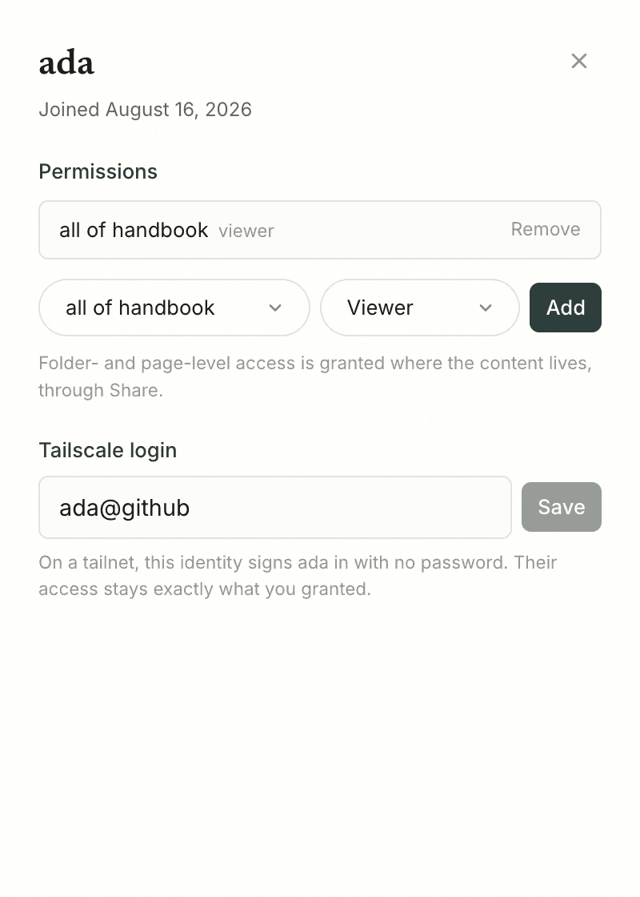
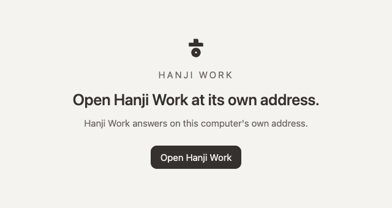

Hanji
HanjiOn your tailnet
The recommended way to share a Hanji instance with a team is not a domain, a
certificate, and a public endpoint. It is a tailnet:
the instance runs on one box, tailscale serve fronts it, and it never
touches the public internet. That sentence is the whole security posture, and
it is a sentence you can say to an administrator with a straight face.
Tailscale mode adds the part that makes it feel finished: the tailnet already knows who is knocking, so Hanji stops asking.
Turn it on
One variable, plus the serve command:
export HANJI_TAILSCALE_OWNER=you@github # your own tailnet login
node_modules/.bin/next start -H 127.0.0.1 -p 4100
tailscale serve --bg 4100
Setting HANJI_TAILSCALE_OWNER does two things at once. It tells Hanji to
trust the identity headers tailscale serve attaches, and it names the
tailnet login that is the owner: you. Open the instance from any device on
your tailnet and you are simply in, as the owner, no password asked.
Let people in
Everyone else maps through Settings → People. Open a person's sheet and link their tailnet login in the Tailscale field. From then on, that identity signs them in with no password. What they can see and propose is set by the grants you gave them; the tailnet only says who they are. See Permissions.
People starts with you: an Owner row with one field, Name. It goes on your commits and reads in bylines and History, in Hanji Plan's assignee list and History, and on your comments in Hanji Think. Commits you made before you set it read under it too: History at once, and a page's byline once the page is edited again or hanji rebuild runs (a byline indexed before this build holds no email to match). A name a person or an agent already uses is refused. With HANJI_GIT_AUTHOR_NAME set, the server's environment names you and the field is disabled.

An unlinked visitor is told plainly: the sign-in card names the tailnet
identity it saw and says the owner has not linked it yet, once tailscaled has
confirmed the login. The password form always works too: a linked login adds a
way to sign in and leaves passwords in place. Hanji Plan and Hanji Think show
the same card with the same sentence; off the tailnet, Plan's card points at
the computer's own address and Think's at the owner's access link, and a Think
session that ended says so first. On the tailnet the card links to the
product's tailnet address when HANJI_TRACKER_URL or HANJI_THINK_URL names
it, and otherwise says to ask the owner for it.

This is also how you invite someone from outside your team: share your node with them in Tailscale, add them as a person, link their login.
Hanji Plan on the tailnet
Hanji Plan signs people in the same way. Build it, start it with the same owner and the same data folder as Document, and serve it on a second port:
export HANJI_TAILSCALE_OWNER=you@github # the same login as Write's
export HANJI_DATA_DIR=~/.hanji # the same folder as Write's
export TRACKER_WORKSPACE=/path/to/tracker # only for a tracker that is not registered as a work mount; registered ones are served from the data folder
pnpm --filter tracker-web build # again after each update of Hanji
pnpm --filter tracker-web start # serves 127.0.0.1:4102
tailscale serve --bg --https=8443 4102
With several trackers registered, Plan serves them all from that one port: each person reaches the trackers whose work mount they may view, by its prefix in the address.
Plan reads people and grants from that data folder, so Document's server does not need to run. To let your team in:
- Register the tracker as a mount of the workspace, in its own folder:
pnpm hanji add-mount work /path/to/tracker work --local. Hanji finds the tracker file (workspace.yml) and records the mount as kind work. The tracker's database keeps working, since it is keyed by the tracker's prefix and folder. - In Document, under Settings → People, add each teammate, link their tailnet login, and make them a Viewer or an Editor of the work mount.
- For each teammate who edits, add their Document user name under
people:in the tracker file, and commit it:
people:
ada: Ada, design lead
remy: Remy, designer
| On the work mount | In Hanji Plan |
|---|---|
| no access | every address answers 404, and the reply names nothing about the tracker |
| Viewer | views, issues, projects, proposals and sessions |
Editor, with a people: entry | also edits issues, projects and views, comments, and files an issue from a page in Document or from a sticky in Think, with their name on each commit |
| Editor, without one | views only; each edit answers with the entry to add |
The owner needs no people: entry to file an issue from a page in Document or from a sticky in Think.
Actions that let an agent run code on this machine stay with the owner: Allow on a permission, a message to a session, Open in Ghostty, starting the conductor, a comment sent to an agent, a comment on an issue whose ask or build is waiting, asking for a build, Workspace settings, starting the session host, and applying or discarding a proposal. A teammate who tries one is told so. Deny and Stop only stop work, so a teammate with edit and a people: entry can use them. A write sent from a page on another site is refused. A session's log shows the folders and commands its agent used on the owner's machine, so anyone who can view sessions sees them.
A private tracker belongs to a private workspace: start its Plan server with its own HANJI_DATA_DIR. A tracker served from a folder that is not a registered work mount of the data folder opens for the owner only.
Links between the products
Each product links to the others through three addresses: HANJI_KB_URL (Document, default http://127.0.0.1:4100), HANJI_TRACKER_URL (Plan, default http://127.0.0.1:4102) and HANJI_THINK_URL (Think, default http://127.0.0.1:4104). The defaults open the visitor's own machine, which suits one person on localhost. On a tailnet, set all three to their tailscale serve addresses on every product server, so a teammate who follows "Cited by" from a Document page opens Plan on your machine:
export HANJI_KB_URL=https://mac.tailnet.ts.net
export HANJI_TRACKER_URL=https://mac.tailnet.ts.net:8443
export HANJI_THINK_URL=https://mac.tailnet.ts.net:8444
A board link in a Document page ([[board:boards/crit#9f2c]]) and an issue's From link in Plan open Think at HANJI_THINK_URL.
Think opens a page it wrote up, and a proposal it made, in Document at HANJI_KB_URL.
The three addresses also decide which requests the tailnet login signs in. In tailnet mode, Document, Plan and Think trust the Tailscale-User-Login header only on a request whose Host is this machine's loopback address (127.0.0.1, localhost or [::1], on any port), which covers requests made on this machine, or the host name of one of the three addresses. tailscale serve passes the tailnet name as the Host when it forwards a request, which is why one of the three addresses must name it. Host names compare without the port and without regard to letter case. A web page open in a browser on this machine can point its own domain at 127.0.0.1 and send a login header of its own, but it cannot change the Host that its own domain gives it, so it cannot sign itself in as the owner. A request with any other Host gets no sign-in from the header: Plan and Think answer 403, and Document treats the visitor as anonymous.
If a sign-in that worked before now answers 403 in Plan, or shows the login page in Document, the product addresses are not set to the tailscale serve names. Set all three as shown above on every product server and restart each one.
Hanji Think on the tailnet
Hanji Think signs people in the same way. Start it with the same owner and the same data folder, with its own address set, and serve it on a third port:
export HANJI_TAILSCALE_OWNER=you@github # the same login as Write's
export HANJI_DATA_DIR=~/.hanji # the same folder as Write's
export HANJI_THINK_URL=https://mac.tailnet.ts.net:8444
node scripts/whiteboard-build.mjs
node --import tsx packages/whiteboard/src/main.ts --port 4104
tailscale serve --bg --https=8444 4104
Think admits the tailnet name as a Host when any one of the three product addresses names it, so the three set as above are enough. If none of the three names the tailnet host, Think answers 403 to every request through the proxy. Register the folder of boards as a think mount, pnpm hanji add-mount boards /path/to/boards boards --local --kind think, and give each teammate a grant on it in Settings → People, on the whole mount or on one board folder:
| On the think mount | In Hanji Think |
|---|---|
| no access | every address of that board answers 404, the same as for a board that does not exist |
| Viewer | opens the board and follows its links |
| Commenter | also comments and reacts |
| Editor | also edits |
Off the tailnet, the owner's access link, printed by the launcher, opens Think; teammates sign in on the tailnet only. Agents hold their own keys (key --agent <handle>), which act with the owner's access. A write sent from a page on another site is refused, and a grant removed ends an open board within a second; the board page then says that access ended and asks to reload or open a new access link.
The contract
The headers are trustworthy when two conditions hold. First, the app binds
127.0.0.1, as above, so tailscale serve and requests from this machine are
the only ways in, and tailscale serve strips any inbound Tailscale-User-*
headers and sets its own. If the app is reachable any other way, anyone on that
path can type the header themselves, and HANJI_TAILSCALE_OWNER must stay
unset. Second, the request's Host names
this machine's loopback address or one of the three product addresses, which
keeps a web page open on this machine from sending a header of its own, as
the section on links between the products describes. Hanji checks the second
condition on every request, and will never turn this mode on by itself.
Two more facts. Signing out on a tailnet clears the session cookie, and the next request signs you in again through the header, because the tailnet still knows who you are. And agents are untouched by all of this. The MCP surface stays bearer-token only, and a tailnet identity never grants an agent anything.
tailscale serve adds the identity headers to every request from your
machine, including a request that another website makes your browser send.
Document answers such a request with 403: every route that changes something
accepts it only from Document's own pages, judged by the browser's
Sec-Fetch-Site and Origin headers. Scripts and the git webhook send
neither header and keep working. A proxy in front of Document must pass the
browser's original Host header or set X-Forwarded-Host, which
tailscale serve does. With neither, Document answers every save with 403.
Belt and suspenders: ask tailscaled itself
The contract above is a deployment shape. If you want the instance to verify it rather than assume it, set one more variable:
export HANJI_TAILSCALE_WHOIS=1
On every header sign-in, Hanji now asks the local tailscaled who owns the
connecting address (tailscale whois, one lookup per address per minute) and
refuses the header unless the answers match. A forged header alone no longer
signs anyone in; it would take tailscaled itself vouching for the forger's
address, which the tailnet does not do. The check needs the tailscale CLI
on the PATH of the user running Hanji; point HANJI_TAILSCALE_BIN at the
binary when it lives elsewhere (on a Mac,
/Applications/Tailscale.app/Contents/MacOS/Tailscale). When in doubt, turn
it on: the cost is one process spawn per new visitor address, and the failure
mode is a login page instead of a wrongly trusted header.
Why this is not SSO
It is better, for the case it covers. On a tailnet you do not integrate an identity provider; you already have one, and it is the network itself. Single sign-on for organizations that live behind Okta or Google Workspace remains where Where we are puts it: the paid seam, later. This mode is for the team that wants the writing surface working today, with nobody typing passwords, on infrastructure they already trust.